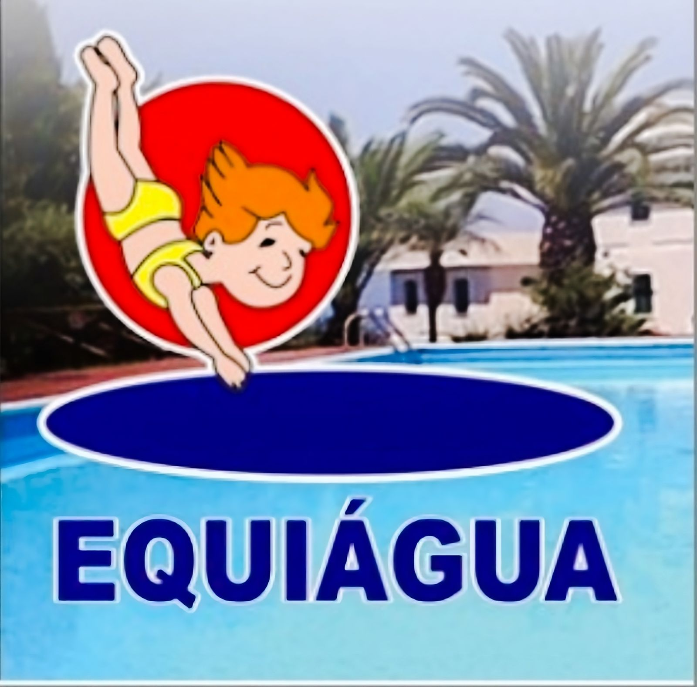
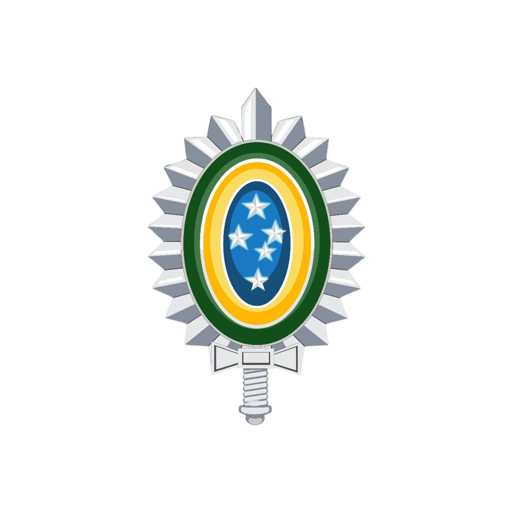

Motorista Particular:
Noemia Roizen - Tempo integral mar de 2017 - Até o momento · 6 anos
Gerente de vendas:

Equiágua Tempo integral fev de 2004 - set de 2013 · 9 anos 8 meses
Como gerente de vendas de produtos químicos na empresa Equiágua, tive a oportunidade de liderar uma equipe dedicada e dinâmica, alcançando resultados significativos no mercado.
Minha experiência como gerente de vendas envolveu o desenvolvimento e implementação de estratégias comerciais eficazes para promover e vender os produtos químicos da Equiágua. Fui responsável por identificar oportunidades de negócios, prospectar novos clientes e manter relacionamentos sólidos com os clientes existentes.
Além disso, trabalhei em estreita colaboração com a equipe de marketing para criar campanhas de promoção e divulgação dos produtos, garantindo que estivessem alinhadas às necessidades do mercado. Também supervisionei o processo de negociação e fechamento de contratos, garantindo condições favoráveis para a empresa e seus clientes.
No desempenho das minhas funções, desenvolvi habilidades de liderança, motivação e gestão de equipe. Fui capaz de identificar o potencial de cada membro da equipe e atribuir responsabilidades de forma eficiente, visando o crescimento e o sucesso coletivo.
Além disso, adquiri conhecimentos técnicos sólidos sobre os produtos químicos comercializados pela Equiágua, compreendendo suas características, aplicações e benefícios para os clientes. Isso me permitiu fornecer um atendimento consultivo e personalizado, atendendo às necessidades específicas de cada cliente.
Ao longo da minha trajetória como gerente de vendas de produtos químicos na Equiágua, obtive resultados positivos, como o aumento das vendas, a conquista de novos mercados e a satisfação dos clientes. Minha capacidade de comunicação eficaz, negociação e foco nos objetivos da empresa foram fundamentais para alcançar esses resultados.
Estou confiante em minha capacidade de contribuir para o sucesso da equipe de vendas da Equiágua, trazendo minha experiência, habilidades e paixão pela indústria de produtos químicos.Como gerente de vendas de produtos químicos na empresa Equiágua, tive a oportunidade de liderar uma equipe dedicada e dinâmica, alcançando resultados significativos no mercado. Minha experiência como gerente de vendas envolveu o desenvolvimento e implementação de estratégias comerciais eficazes para promover e vender os produtos químicos da Equiágua. Fui responsável por identificar oportunidades de negócios, prospectar novos clientes e manter relacionamentos sólidos com os clientes existentes.
Além disso, trabalhei em estreita colaboração com a equipe de marketing para criar campanhas de promoção e divulgação dos produtos, garantindo que estivessem alinhadas às necessidades do mercado. Também supervisionei o processo de negociação e fechamento de contratos, garantindo condições favoráveis para a empresa e seus clientes.
No desempenho das minhas funções, desenvolvi habilidades de liderança, motivação e gestão de equipe. Fui capaz de identificar o potencial de cada membro da equipe e atribuir responsabilidades de forma eficiente, visando o crescimento e o sucesso coletivo.
Além disso, adquiri conhecimentos técnicos sólidos sobre os produtos químicos comercializados pela Equiágua, compreendendo suas características, aplicações e benefícios para os clientes. Isso me permitiu fornecer um atendimento consultivo e personalizado, atendendo às necessidades específicas de cada cliente. Ao longo da minha trajetória como gerente de vendas de produtos químicos na Equiágua, obtive resultados positivos, como o aumento das vendas, a conquista de novos mercados e a satisfação dos clientes.
Minha capacidade de comunicação eficaz, negociação e foco nos objetivos da empresa foram fundamentais para alcançar esses resultados. Estou confiante em minha capacidade de contribuir para o sucesso da equipe de vendas da Equiágua, trazendo minha experiência, habilidades e paixão pela indústria de produtos químicos.
Exército Exército:

Tempo integral abril de 1998 até abril de 2004 · 5 anos - Oasco, São Paulo, Brasil
Como militar do Exército Brasileiro, dediquei-me ao serviço de proteção e defesa da pátria, cumprindo diversas responsabilidades e desempenhando um papel fundamental na segurança e bem-estar da sociedade.
Durante minha carreira militar, adquiri habilidades e competências em áreas como liderança, disciplina, trabalho em equipe, tomada de decisões sob pressão e resolução de problemas. Fui treinado para atuar em diferentes ambientes e situações, tanto em tempos de paz quanto em operações de segurança e emergências.
Como militar, tive a oportunidade de participar de treinamentos intensivos, adquirindo conhecimentos específicos em áreas como tática militar, manejo de armas e equipamentos, técnicas de combate e operações de campo. Aprendi a trabalhar de forma coordenada e eficiente, valorizando a cooperação e o respeito mútuo.
Além disso, a disciplina e a dedicação foram aspectos essenciais da minha vida militar. Aprendi a cumprir normas e regulamentos, a seguir hierarquias e a manter um alto padrão de conduta profissional. Desenvolvi habilidades de organização, pontualidade e responsabilidade, características que levarei comigo em qualquer empreendimento.
Como militar do Exército Brasileiro, tive a honra de servir à minha nação, protegendo seus valores e interesses. Ao longo da minha carreira, busquei constantemente aprimorar-me e contribuir para a eficiência e excelência das operações militares.
Hoje, como ex-militar, trago comigo os valores e princípios adquiridos durante minha experiência no Exército Brasileiro.
Sou grato pela oportunidade de ter feito parte dessa instituição e estou preparado para enfrentar novos desafios, aplicando as habilidades e o comprometimento que desenvolvi ao longo da minha carreira militar.